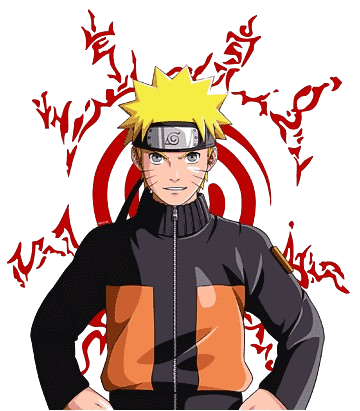

meu anime favorito e naruto.Naruto Uzumaki é apresentado como um jovem rapaz louro, cabelos arrepiados e olhos azuis. Ele frequentemente veste uma jaqueta laranja. Após a sua graduação ninja ele começa a usar um protetor de testa que denota a sua posição como um ninja da Vila Oculta da Folha.
